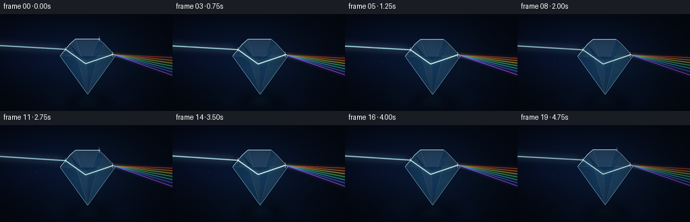
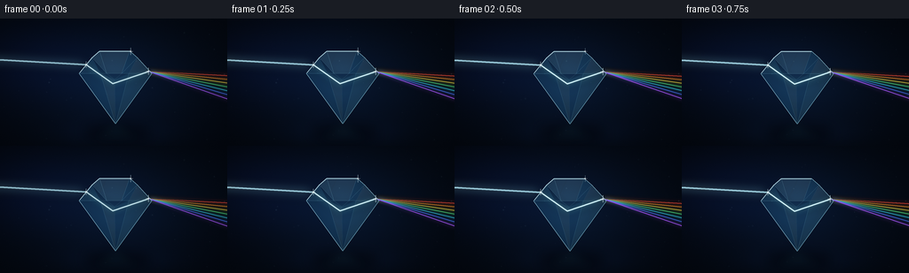

CODING AGENTS AS PIXEL WORLD MODELS
traex/GPT-5.6-Sol · phygen_089
点击播放 · 原生 RGB 像素
逐轮保存的候选
回放视频、检查图与代码变化。
每份候选均可单独播放。实际图片检查记录在下方工具轨迹中。
候选 01播放与检查图
点击播放 · 原生 RGB 像素


展开代码变化
--- 上一保存版本
+++ 本次保存版本
@@ -0,0 +1,256 @@
+from pathlib import Path
+import json, math
+import numpy as np
+from PIL import Image, ImageDraw, ImageFilter
+import artifact_io
+
+# Procedural, deterministic supersampled rendering.
+ROOT = Path(__file__).resolve().parent
+SPEC = json.loads((ROOT / 'task_spec.json').read_text())
+W, H, N = SPEC['width'], SPEC['height'], SPEC['frames']
+S = 4
+WW, HH = W*S, H*S
+rng = np.random.default_rng(8901)
+
+
+def sc_point(p):
+ return (int(round(p[0]*S)), int(round(p[1]*S)))
+
+def sc_points(points):
+ return [sc_point(p) for p in points]
+
+def overlay(base, layer):
+ return Image.alpha_composite(base, layer)
+
+def layer_rgba():
+ return Image.new('RGBA', (WW, HH), (0,0,0,0))
+
+def glow_line(base, points, color, width=1.2, glow=8, alpha=255, bloom_alpha=100):
+ """Add a luminous polyline with a soft bloom and hot center."""
+ pts = sc_points(points)
+ if glow > 0:
+ blur = layer_rgba()
+ db = ImageDraw.Draw(blur)
+ db.line(pts, fill=(*color, bloom_alpha), width=max(1, int(glow*S)), joint='curve')
+ blur = blur.filter(ImageFilter.GaussianBlur(glow*S*0.62))
+ base = overlay(base, blur)
+ ray = layer_rgba()
+ dr = ImageDraw.Draw(ray)
+ dr.line(pts, fill=(*color, alpha), width=max(1, int(width*S)), joint='curve')
+ # a white-hot subpixel center sells coherent light
+ if width >= 1.5:
+ hot = tuple(min(255, int(c + (255-c)*0.66)) for c in color)
+ dr.line(pts, fill=(*hot, min(255, alpha)), width=max(1, int(width*S*0.35)), joint='curve')
+ return overlay(base, ray)
+
+def polygon_layer(points, fill, blur=0):
+ la = layer_rgba()
+ ImageDraw.Draw(la).polygon(sc_points(points), fill=fill)
+ if blur:
+ la = la.filter(ImageFilter.GaussianBlur(blur*S))
+ return la
+
+def draw_sparkle(base, x, y, radius, alpha=220, tint=(220,246,255)):
+ # soft halo plus four-point diffraction star
+ halo = layer_rgba()
+ d = ImageDraw.Draw(halo)
+ d.ellipse((int((x-radius*1.7)*S), int((y-radius*1.7)*S),
+ int((x+radius*1.7)*S), int((y+radius*1.7)*S)), fill=(*tint, alpha//2))
+ halo = halo.filter(ImageFilter.GaussianBlur(radius*S*0.9))
+ base = overlay(base, halo)
+ star = layer_rgba(); ds = ImageDraw.Draw(star)
+ cx, cy = int(x*S), int(y*S)
+ ds.line((cx-int(radius*3.2*S),cy,cx+int(radius*3.2*S),cy), fill=(*tint,alpha), width=max(1,S//2))
+ ds.line((cx,cy-int(radius*5*S),cx,cy+int(radius*5*S)), fill=(*tint,alpha), width=max(1,S//2))
+ ds.ellipse((cx-int(radius*.7*S),cy-int(radius*.7*S),cx+int(radius*.7*S),cy+int(radius*.7*S)), fill=(255,255,255,255))
+ return overlay(base, star)
+
+# Fixed dust layout makes movement coherent rather than noisy.
+dust = []
+for _ in range(52):
+ dust.append((rng.uniform(0,W), rng.uniform(10,H-8), rng.uniform(.22,1.05), rng.uniform(0,2*math.pi), rng.choice([-1,1])))
+
+# RGB colors ordered from least to most downward dispersion.
+spectrum = [
+ ((255, 67, 52), 65.0),
+ ((255, 142, 36), 69.3),
+ ((255, 223, 66), 73.8),
+ ((82, 245, 131), 78.6),
+ ((50, 221, 247), 83.7),
+ ((65, 116, 255), 89.0),
+ ((170, 82, 255), 94.6),
+]
+
+
+def make_background(fi):
+ # Deep, cool studio background with radial light around the subject.
+ yy, xx = np.mgrid[0:HH, 0:WW].astype(np.float32)
+ x = xx/S; y = yy/S
+ radial = np.exp(-(((x-130)/105)**2 + ((y-70)/69)**2)*1.35)
+ left_haze = np.exp(-(((x-28)/88)**2 + ((y-50)/47)**2)*1.1)
+ floor_glow = np.exp(-(((x-134)/72)**2 + ((y-130)/18)**2)*1.6)
+ vignette = np.clip(1 - 0.34*(((x-W/2)/(W*.7))**2 + ((y-H/2)/(H*.75))**2), .54, 1)
+ grain = rng.normal(0, .65, (HH,WW))
+ arr = np.empty((HH,WW,4), dtype=np.uint8)
+ arr[...,0] = np.clip((4 + 4*radial + 2*left_haze + 2*floor_glow)*vignette + grain,0,255)
+ arr[...,1] = np.clip((9 + 12*radial + 5*left_haze + 6*floor_glow)*vignette + grain,0,255)
+ arr[...,2] = np.clip((18 + 25*radial + 18*left_haze + 15*floor_glow)*vignette + grain,0,255)
+ arr[...,3] = 255
+ base = Image.fromarray(arr, 'RGBA')
+ # A soft horizontal surface and elliptical diamond shadow.
+ surface = layer_rgba(); d = ImageDraw.Draw(surface)
+ d.line((0,int(127*S),WW,int(127*S)), fill=(66,115,143,20), width=1*S)
+ d.ellipse(sc_points([(92,119),(173,140)]), fill=(0,0,2,150))
+ surface = surface.filter(ImageFilter.GaussianBlur(7*S))
+ base = overlay(base, surface)
+ return base
+
+
+def render_frame(fi):
+ # Smooth looping illumination; geometry remains unmistakably stable.
+ phase = 2*math.pi*fi/N
+ pulse = .86 + .12*math.sin(phase*2 - .7) + .04*math.sin(phase*5)
+ drift = 0.85*math.sin(phase)
+ dy = .55*math.sin(phase*.72)
+ base = make_background(fi)
+
+ # Atmospheric dust, most visible around the incoming beam.
+ mote_layer = layer_rgba(); dm = ImageDraw.Draw(mote_layer)
+ for x0,y0,r,p,direction in dust:
+ x = (x0 + direction*fi*.13) % W
+ y = y0 + 1.3*math.sin(phase + p)
+ proximity = math.exp(-((y-(47 + .065*x)) / 22)**2)
+ a = int((9 + 29*proximity) * (0.55+0.45*math.sin(phase*1.7+p)**2))
+ rr = max(1,int(r*S))
+ dm.ellipse((int(x*S)-rr,int(y*S)-rr,int(x*S)+rr,int(y*S)+rr), fill=(154,207,230,a))
+ mote_layer = mote_layer.filter(ImageFilter.GaussianBlur(.24*S))
+ base = overlay(base, mote_layer)
+
+ # Gem outline. Side-view brilliant-cut glass diamond.
+ P = [(89,62+dy),(103.5,44+dy),(112,36.5+dy),(146,36.5+dy),
+ (154.5,44+dy),(171,62+dy),(130,119+dy)]
+ entry = (96.8,52.1+dy+drift*.18)
+ knot = (126.7,73.4+dy+drift*.20)
+ exitp = (167.2,59.7+dy+drift*.12)
+
+ # Incoming collimated white-blue beam, visible before impact.
+ # Wide volumetric sleeve is tapered toward the crystal.
+ beam_poly = [(-10,43.4+drift),(entry[0],entry[1]-3.7),(entry[0],entry[1]+3.7),(-10,49.1+drift)]
+ base = overlay(base, polygon_layer(beam_poly, (65,191,242,int(21*pulse)), blur=6))
+ base = glow_line(base, [(-9,45.9+drift), entry], (155,231,255), width=2.05,
+ glow=10, alpha=int(235*pulse), bloom_alpha=int(110*pulse))
+ base = glow_line(base, [(-9,45.9+drift), entry], (232,251,255), width=.62,
+ glow=2.2, alpha=255, bloom_alpha=130)
+
+ # Dispersed beams behind the gem. Each starts at the same exit point.
+ # Their divergence is explicit and is the main physical payoff.
+ for idx,(color,end_y) in enumerate(spectrum):
+ wav = .8*math.sin(phase*1.3 + idx*.45)
+ end = (268,end_y + wav + drift*.28)
+ # tapered soft volume per spectral component
+ spread = 1.25 + idx*.025
+ poly = [exitp, (268,end[1]-spread), (268,end[1]+spread)]
+ base = overlay(base, polygon_layer(poly, (*color,int(33*pulse)), blur=3.6))
+ base = glow_line(base, [exitp,end], color, width=1.12, glow=4.6,
+ alpha=int(205*pulse), bloom_alpha=int(88*pulse))
+ # bright filament, especially clear at this small resolution
+ core = tuple(min(255,int(c*.88+30)) for c in color)
+ base = glow_line(base, [(171.2,60.6+dy),end], core, width=.38,
+ glow=0, alpha=int(225*pulse), bloom_alpha=0)
+
+ # Weak cyan caustic under the lower pavilion.
+ caustic = layer_rgba(); dc = ImageDraw.Draw(caustic)
+ dc.polygon(sc_points([(127,118+dy),(134,118+dy),(159,137),(103,137)]), fill=(72,210,239,int(17*pulse)))
+ caustic = caustic.filter(ImageFilter.GaussianBlur(6*S))
+ base = overlay(base, caustic)
+
+ # Outer glass body: transparent cool volume with mild center illumination.
+ gem_mask = Image.new('L',(WW,HH),0); ImageDraw.Draw(gem_mask).polygon(sc_points(P), fill=255)
+ yy,xx=np.mgrid[0:HH,0:WW].astype(np.float32); x=xx/S; y=yy/S
+ center_glow=np.exp(-(((x-130)/37)**2+((y-70)/45)**2))
+ glass=np.zeros((HH,WW,4),dtype=np.uint8)
+ glass[...,0]=np.clip(14+25*center_glow,0,255)
+ glass[...,1]=np.clip(38+63*center_glow,0,255)
+ glass[...,2]=np.clip(63+91*center_glow,0,255)
+ glass[...,3]=np.array(gem_mask)*0 + np.where(np.array(gem_mask)>0,74,0).astype(np.uint8)
+ base=overlay(base,Image.fromarray(glass,'RGBA'))
+
+ # Facet planes, each subtly different to establish glass depth.
+ facets = [
+ ([(89,62+dy),(103.5,44+dy),(113,62+dy)], (67,151,192,42)),
+ ([(103.5,44+dy),(112,36.5+dy),(120,62+dy)], (151,224,241,31)),
+ ([(112,36.5+dy),(146,36.5+dy),(137,62+dy),(120,62+dy)], (180,237,249,27)),
+ ([(146,36.5+dy),(154.5,44+dy),(145,62+dy),(137,62+dy)], (54,139,184,37)),
+ ([(154.5,44+dy),(171,62+dy),(145,62+dy)], (165,226,239,27)),
+ ([(89,62+dy),(113,62+dy),(130,119+dy)], (39,111,157,42)),
+ ([(113,62+dy),(130,119+dy),(129,69+dy)], (138,213,229,27)),
+ ([(129,69+dy),(130,119+dy),(145,62+dy)], (41,117,165,36)),
+ ([(145,62+dy),(171,62+dy),(130,119+dy)], (95,179,205,33)),
+ ]
+ for poly,fill in facets:
+ base=overlay(base,polygon_layer(poly,fill))
+
+ # Refracted internal path. A cyan-white zig-zag unmistakably traverses the glass.
+ # Broader colored underglow suggests wavelength-dependent bending inside.
+ internal = layer_rgba(); di=ImageDraw.Draw(internal)
+ di.line(sc_points([entry,knot,exitp]), fill=(85,214,255,int(115*pulse)), width=int(6.5*S), joint='curve')
+ internal=internal.filter(ImageFilter.GaussianBlur(4.2*S))
+ # Clip internal bloom to the diamond silhouette.
+ z=np.array(internal); z[...,3]=(z[...,3].astype(np.uint16)*np.array(gem_mask)//255).astype(np.uint8)
+ base=overlay(base,Image.fromarray(z,'RGBA'))
+ base=glow_line(base,[entry,knot,exitp],(199,246,255),width=1.5,glow=2.6,
+ alpha=int(250*pulse),bloom_alpha=int(145*pulse))
+ base=glow_line(base,[entry,knot,exitp],(255,255,255),width=.46,glow=0,alpha=255,bloom_alpha=0)
+
+ # Crisp facet seams and rim lights.
+ edge = layer_rgba(); de=ImageDraw.Draw(edge)
+ de.line(sc_points(P+[P[0]]), fill=(176,232,247,185), width=max(2,int(.62*S)), joint='curve')
+ seams=[
+ [(89,62+dy),(171,62+dy)],[(103.5,44+dy),(120,62+dy)],[(154.5,44+dy),(137,62+dy)],
+ [(112,36.5+dy),(120,62+dy)],[(146,36.5+dy),(137,62+dy)],
+ [(113,62+dy),(130,119+dy)],[(145,62+dy),(130,119+dy)],
+ [(120,62+dy),(129,69+dy),(137,62+dy)]
+ ]
+ for j,line in enumerate(seams):
+ a=70 + int(22*math.sin(phase+j*.8))
+ de.line(sc_points(line),fill=(144,218,239,a),width=max(1,int(.34*S)))
+ # bright rim along upper-left and lower-right facets
+ de.line(sc_points([(90,61+dy),(104,44+dy),(112,37+dy),(146,37+dy)]),fill=(224,251,255,215),width=max(2,int(.62*S)))
+ de.line(sc_points([(171,62+dy),(130,119+dy)]),fill=(118,211,236,130),width=max(1,int(.48*S)))
+ base=overlay(base,edge)
+
+ # Animated specular sweep across one crown facet.
+ sx=116 + 25*((math.sin(phase-.8)+1)/2)
+ shimmer=layer_rgba(); ds=ImageDraw.Draw(shimmer)
+ ds.line(sc_points([(sx,38+dy),(sx-11,61+dy)]),fill=(225,253,255,90),width=max(1,int(.48*S)))
+ shimmer=shimmer.filter(ImageFilter.GaussianBlur(.45*S))
+ zz=np.array(shimmer); zz[...,3]=(zz[...,3].astype(np.uint16)*np.array(gem_mask)//255).astype(np.uint8)
+ base=overlay(base,Image.fromarray(zz,'RGBA'))
+
+ # Refraction-node glints and intermittent facet sparkle.
+ base=draw_sparkle(base,entry[0],entry[1],.72,alpha=int(220*pulse))
+ base=draw_sparkle(base,exitp[0],exitp[1],.82,alpha=int(245*pulse))
+ sparkle_amp=max(0,math.sin(phase*2.0+1.2))
+ if sparkle_amp>.15:
+ base=draw_sparkle(base,147,37+dy,.52+.35*sparkle_amp,alpha=int(175*sparkle_amp))
+
+ # Moving bright packets along the incoming ray imply live light flow.
+ q=(fi*0.095)%1.0
+ bx=-4+(entry[0]+4)*q; by=(45.9+drift)*(1-q)+entry[1]*q
+ packet=layer_rgba(); dp=ImageDraw.Draw(packet)
+ dp.ellipse((int((bx-4)*S),int((by-.6)*S),int((bx+4)*S),int((by+.6)*S)),fill=(226,251,255,95))
+ packet=packet.filter(ImageFilter.GaussianBlur(1.7*S))
+ base=overlay(base,packet)
+
+ # Downsample with high-quality antialiasing and return RGB.
+ frame=base.convert('RGB').resize((W,H),Image.Resampling.LANCZOS)
+ return np.asarray(frame,dtype=np.uint8)
+
+
+def main():
+ frames=np.stack([render_frame(i) for i in range(N)],axis=0)
+ artifact_io.save(frames,ROOT)
+ print(f'Saved {len(frames)} RGB frames at {W}x{H}.')
+
+if __name__=='__main__':
+ main()
可观测工具轨迹
实际执行的命令与返回图片。
命令 1exit 0
/bin/bash -lc "cat prompt.txt && printf '\\n--- GENERATION_RULES.md ---\\n' && cat GENERATION_RULES.md"
命令 2exit 0
/bin/bash -lc "cat task_spec.json && printf '\\n--- FILES ---\\n' && find . -maxdepth 2 -type f -printf '%p %s bytes\\n' | sort"
命令 3exit 0
/bin/bash -lc "command -v ffmpeg; command -v blender; command -v convert; command -v python3; python3 - <<'PY' mods=['PIL','numpy','cv2','imageio','moviepy','cairo','moderngl'] for m in mods: try: x=__import__(m); print(m, 'OK', getattr(x,'__version__','')) except Exception as e: print(m,'NO',type(e).__name__) PY"
命令 4exit 0
/bin/bash -lc "sed -n '1,240p' artifact_io.py"
命令 5exit 0
/bin/bash -lc "cat > generate.py <<'PY'
from pathlib import Path
import json, math
import numpy as np
from PIL import Image, ImageDraw, ImageFilter
import artifact_io
# Procedural, deterministic supersampled rendering.
ROOT = Path(__file__).resolve().parent
SPEC = json.loads((ROOT / 'task_spec.json').read_text())
W, H, N = SPEC['width'], SPEC['height'], SPEC['frames']
S = 4
WW, HH = W*S, H*S
rng = np.random.default_rng(8901)
def sc_point(p):
return (int(round(p[0]*S)), int(round(p[1]*S)))
def sc_points(points):
return [sc_point(p) for p in points]
def overlay(base, layer):
return Image.alpha_composite(base, layer)
def layer_rgba():
return Image.new('RGBA', (WW, HH), (0,0,0,0))
def glow_line(base, points, color, width=1.2, glow=8, alpha=255, bloom_alpha=100):
\"\"\"Add a luminous polyline with a soft bloom and hot center.\"\"\"
pts = sc_points(points)
if glow > 0:
blur = layer_rgba()
db = ImageDraw.Draw(blur)
db.line(pts, fill=(*color, bloom_alpha), width=max(1, int(glow*S)), joint='curve')
blur = blur.filter(ImageFilter.GaussianBlur(glow*S*0.62))
base = overlay(base, blur)
ray = layer_rgba()
dr = ImageDraw.Draw(ray)
dr.line(pts, fill=(*color, alpha), width=max(1, int(width*S)), joint='curve')
# a white-hot subpixel center sells coherent light
if width >= 1.5:
hot = tuple(min(255, int(c + (255-c)*0.66)) for c in color)
dr.line(pts, fill=(*hot, min(255, alpha)), width=max(1, int(width*S*0.35)), joint='curve')
return overlay(base, ray)
def polygon_layer(points, fill, blur=0):
la = layer_rgba()
ImageDraw.Draw(la).polygon(sc_points(points), fill=fill)
if blur:
la = la.filter(ImageFilter.GaussianBlur(blur*S))
return la
def draw_sparkle(base, x, y, radius, alpha=220, tint=(220,246,255)):
# soft halo plus four-point diffraction star
halo = layer_rgba()
d = ImageDraw.Draw(halo)
d.ellipse((int((x-radius*1.7)*S), int((y-radius*1.7)*S),
int((x+radius*1.7)*S), int((y+radius*1.7)*S)), fill=(*tint, alpha//2))
halo = halo.filter(ImageFilter.GaussianBlur(radius*S*0.9))
base = overlay(base, halo)
star = layer_rgba(); ds = ImageDraw.Draw(star)
cx, cy = int(x*S), int(y*S)
ds.line((cx-int(radius*3.2*S),cy,cx+int(radius*3.2*S),cy), fill=(*tint,alpha), width=max(1,S//2))
ds.line((cx,cy-int(radius*5*S),cx,cy+int(radius*5*S)), fill=(*tint,alpha), width=max(1,S//2))
ds.ellipse((cx-int(radius*.7*S),cy-int(radius*.7*S),cx+int(radius*.7*S),cy+int(radius*.7*S)), fill=(255,255,255,255))
return overlay(base, star)
# Fixed dust layout makes movement coherent rather than noisy.
dust = []
for _ in range(52):
dust.append((rng.uniform(0,W), rng.uniform(10,H-8), rng.uniform(.22,1.05), rng.uniform(0,2*math.pi), rng.choice([-1,1])))
# RGB colors ordered from least to most downward dispersion.
spectrum = [
((255, 67, 52), 65.0),
((255, 142, 36), 69.3),
((255, 223, 66), 73.8),
((82, 245, 131), 78.6),
((50, 221, 247), 83.7),
((65, 116, 255), 89.0),
((170, 82, 255), 94.6),
]
def make_background(fi):
# Deep, cool studio background with radial light around the subject.
yy, xx = np.mgrid[0:HH, 0:WW].astype(np.float32)
x = xx/S; y = yy/S
radial = np.exp(-(((x-130)/105)**2 + ((y-70)/69)**2)*1.35)
left_haze = np.exp(-(((x-28)/88)**2 + ((y-50)/47)**2)*1.1)
floor_glow = np.exp(-(((x-134)/72)**2 + ((y-130)/18)**2)*1.6)
vignette = np.clip(1 - 0.34*(((x-W/2)/(W*.7))**2 + ((y-H/2)/(H*.75))**2), .54, 1)
grain = rng.normal(0, .65, (HH,WW))
arr = np.empty((HH,WW,4), dtype=np.uint8)
arr[...,0] = np.clip((4 + 4*radial + 2*left_haze + 2*floor_glow)*vignette + grain,0,255)
arr[...,1] = np.clip((9 + 12*radial + 5*left_haze + 6*floor_glow)*vignette + grain,0,255)
arr[...,2] = np.clip((18 + 25*radial + 18*left_haze + 15*floor_glow)*vignette + grain,0,255)
arr[...,3] = 255
base = Image.fromarray(arr, 'RGBA')
# A soft horizontal surface and elliptical diamond shadow.
surface = layer_rgba(); d = ImageDraw.Draw(surface)
d.line((0,int(127*S),WW,int(127*S)), fill=(66,115,143,20), width=1*S)
d.ellipse(sc_points([(92,119),(173,140)]), fill=(0,0,2,150))
surface = surface.filter(ImageFilter.GaussianBlur(7*S))
base = overlay(base, surface)
return base
def render_frame(fi):
# Smooth looping illumination; geometry remains unmistakably stable.
phase = 2*math.pi*fi/N
pulse = .86 + .12*math.sin(phase*2 - .7) + .04*math.sin(phase*5)
drift = 0.85*math.sin(phase)
dy = .55*math.sin(phase*.72)
base = make_background(fi)
# Atmospheric dust, most visible around the incoming beam.
mote_layer = layer_rgba(); dm = ImageDraw.Draw(mote_layer)
for x0,y0,r,p,direction in dust:
x = (x0 + direction*fi*.13) % W
y = y0 + 1.3*math.sin(phase + p)
proximity = math.exp(-((y-(47 + .065*x)) / 22)**2)
a = int((9 + 29*proximity) * (0.55+0.45*math.sin(phase*1.7+p)**2))
rr = max(1,int(r*S))
dm.ellipse((int(x*S)-rr,int(y*S)-rr,int(x*S)+rr,int(y*S)+rr), fill=(154,207,230,a))
mote_layer = mote_layer.filter(ImageFilter.GaussianBlur(.24*S))
base = overlay(base, mote_layer)
# Gem outline. Side-view brilliant-cut glass diamond.
P = [(89,62+dy),(103.5,44+dy),(112,36.5+dy),(146,36.5+dy),
(154.5,44+dy),(171,62+dy),(130,119+dy)]
entry = (96.8,52.1+dy+drift*.18)
knot = (126.7,73.4+dy+drift*.20)
exitp = (167.2,59.7+dy+drift*.12)
# Incoming collimated white-blue beam, visible before impact.
# Wide volumetric sleeve is tapered toward the crystal.
beam_poly = [(-10,43.4+drift),(entry[0],entry[1]-3.7),(entry[0],entry[1]+3.7),(-10,49.1+drift)]
base = overlay(base, polygon_layer(beam_poly, (65,191,242,int(21*pulse)), blur=6))
base = glow_line(base, [(-9,45.9+drift), entry], (155,231,255), width=2.05,
glow=10, alpha=int(235*pulse), bloom_alpha=int(110*pulse))
base = glow_line(base, [(-9,45.9+drift), entry], (232,251,255), width=.62,
glow=2.2, alpha=255, bloom_alpha=130)
# Dispersed beams behind the gem. Each starts at the same exit point.
# Their divergence is explicit and is the main physical payoff.
for idx,(color,end_y) in enumerate(spectrum):
wav = .8*math.sin(phase*1.3 + idx*.45)
end = (268,end_y + wav + drift*.28)
# tapered soft volume per spectral component
spread = 1.25 + idx*.025
poly = [exitp, (268,end[1]-spread), (268,end[1]+spread)]
base = overlay(base, polygon_layer(poly, (*color,int(33*pulse)), blur=3.6))
base = glow_line(base, [exitp,end], color, width=1.12, glow=4.6,
alpha=int(205*pulse), bloom_alpha=int(88*pulse))
# bright filament, especially clear at this small resolution
core = tuple(min(255,int(c*.88+30)) for c in color)
base = glow_line(base, [(171.2,60.6+dy),end], core, width=.38,
glow=0, alpha=int(225*pulse), bloom_alpha=0)
# Weak cyan caustic under the lower pavilion.
caustic = layer_rgba(); dc = ImageDraw.Draw(caustic)
dc.polygon(sc_points([(127,118+dy),(134,118+dy),(159,137),(103,137)]), fill=(72,210,239,int(17*pulse)))
caustic = caustic.filter(ImageFilter.GaussianBlur(6*S))
base = overlay(base, caustic)
# Outer glass body: transparent cool volume with mild center illumination.
gem_mask = Image.new('L',(WW,HH),0); ImageDraw.Draw(gem_mask).polygon(sc_points(P), fill=255)
yy,xx=np.mgrid[0:HH,0:WW].astype(np.float32); x=xx/S; y=yy/S
center_glow=np.exp(-(((x-130)/37)**2+((y-70)/45)**2))
glass=np.zeros((HH,WW,4),dtype=np.uint8)
glass[...,0]=np.clip(14+25*center_glow,0,255)
glass[...,1]=np.clip(38+63*center_glow,0,255)
glass[...,2]=np.clip(63+91*center_glow,0,255)
glass[...,3]=np.array(gem_mask)*0 + np.where(np.array(gem_mask)>0,74,0).astype(np.uint8)
base=overlay(base,Image.fromarray(glass,'RGBA'))
# Facet planes, each subtly different to establish glass depth.
facets = [
([(89,62+dy),(103.5,44+dy),(113,62+dy)], (67,151,192,42)),
([(103.5,44+dy),(112,36.5+dy),(120,62+dy)], (151,224,241,31)),
([(112,36.5+dy),(146,36.5+dy),(137,62+dy),(120,62+dy)], (180,237,249,27)),
([(146,36.5+dy),(154.5,44+dy),(145,62+dy),(137,62+dy)], (54,139,184,37)),
([(154.5,44+dy),(171,62+dy),(145,62+dy)], (165,226,239,27)),
([(89,62+dy),(113,62+dy),(130,119+dy)], (39,111,157,42)),
([(113,62+dy),(130,119+dy),(129,69+dy)], (138,213,229,27)),
([(129,69+dy),(130,119+dy),(145,62+dy)], (41,117,165,36)),
([(145,62+dy),(171,62+dy),(130,119+dy)], (95,179,205,33)),
]
for poly,fill in facets:
base=overlay(base,polygon_layer(poly,fill))
# Refracted internal path. A cyan-white zig-zag unmistakably traverses the glass.
# Broader colored underglow suggests wavelength-dependent bending inside.
internal = layer_rgba(); di=ImageDraw.Draw(internal)
di.line(sc_points([entry,knot,exitp]), fill=(85,214,255,int(115*pulse)), width=int(6.5*S), joint='curve')
internal=internal.filter(ImageFilter.GaussianBlur(4.2*S))
# Clip internal bloom to the diamond silhouette.
z=np.array(internal); z[...,3]=(z[...,3].astype(np.uint16)*np.array(gem_mask)//255).astype(np.uint8)
base=overlay(base,Image.fromarray(z,'RGBA'))
base=glow_line(base,[entry,knot,exitp],(199,246,255),width=1.5,glow=2.6,
alpha=int(250*pulse),bloom_alpha=int(145*pulse))
base=glow_line(base,[entry,knot,exitp],(255,255,255),width=.46,glow=0,alpha=255,bloom_alpha=0)
# Crisp facet seams and rim lights.
edge = layer_rgba(); de=ImageDraw.Draw(edge)
de.line(sc_points(P+[P[0]]), fill=(176,232,247,185), width=max(2,int(.62*S)), joint='curve')
seams=[
[(89,62+dy),(171,62+dy)],[(103.5,44+dy),(120,62+dy)],[(154.5,44+dy),(137,62+dy)],
[(112,36.5+dy),(120,62+dy)],[(146,36.5+dy),(137,62+dy)],
[(113,62+dy),(130,119+dy)],[(145,62+dy),(130,119+dy)],
[(120,62+dy),(129,69+dy),(137,62+dy)]
]
for j,line in enumerate(seams):
a=70 + int(22*math.sin(phase+j*.8))
de.line(sc_points(line),fill=(144,218,239,a),width=max(1,int(.34*S)))
# bright rim along upper-left and lower-right facets
de.line(sc_points([(90,61+dy),(104,44+dy),(112,37+dy),(146,37+dy)]),fill=(224,251,255,215),width=max(2,int(.62*S)))
de.line(sc_points([(171,62+dy),(130,119+dy)]),fill=(118,211,236,130),width=max(1,int(.48*S)))
base=overlay(base,edge)
# Animated specular sweep across one crown facet.
sx=116 + 25*((math.sin(phase-.8)+1)/2)
shimmer=layer_rgba(); ds=ImageDraw.Draw(shimmer)
ds.line(sc_points([(sx,38+dy),(sx-11,61+dy)]),fill=(225,253,255,90),width=max(1,int(.48*S)))
shimmer=shimmer.filter(ImageFilter.GaussianBlur(.45*S))
zz=np.array(shimmer); zz[...,3]=(zz[...,3].astype(np.uint16)*np.array(gem_mask)//255).astype(np.uint8)
base=overlay(base,Image.fromarray(zz,'RGBA'))
# Refraction-node glints and intermittent facet sparkle.
base=draw_sparkle(base,entry[0],entry[1],.72,alpha=int(220*pulse))
base=draw_sparkle(base,exitp[0],exitp[1],.82,alpha=int(245*pulse))
sparkle_amp=max(0,math.sin(phase*2.0+1.2))
if sparkle_amp>.15:
base=draw_sparkle(base,147,37+dy,.52+.35*sparkle_amp,alpha=int(175*sparkle_amp))
# Moving bright packets along the incoming ray imply live light flow.
q=(fi*0.095)%1.0
bx=-4+(entry[0]+4)*q; by=(45.9+drift)*(1-q)+entry[1]*q
packet=layer_rgba(); dp=ImageDraw.Draw(packet)
dp.ellipse((int((bx-4)*S),int((by-.6)*S),int((bx+4)*S),int((by+.6)*S)),fill=(226,251,255,95))
packet=packet.filter(ImageFilter.GaussianBlur(1.7*S))
base=overlay(base,packet)
# Downsample with high-quality antialiasing and return RGB.
frame=base.convert('RGB').resize((W,H),Image.Resampling.LANCZOS)
return np.asarray(frame,dtype=np.uint8)
def main():
frames=np.stack([render_frame(i) for i in range(N)],axis=0)
artifact_io.save(frames,ROOT)
print(f'Saved {len(frames)} RGB frames at {W}x{H}.')
if __name__=='__main__':
main()
PY
python3 generate.py
ls -lh pixels.npz inspection.png transition_check.png index.html frames/00.png frames/19.png"命令 6exit 0
/bin/bash -lc "python3 - <<'PY'
import json, numpy as np
from PIL import Image
from pathlib import Path
p=Path('.')
s=json.loads((p/'task_spec.json').read_text())
z=np.load(p/'pixels.npz')['pixels']
print('packed tensor', z.shape, z.dtype, 'expected', (s['height'],s['width'],s['frames']))
ims=np.stack([np.array(Image.open(p/'frames'/f'{i:02d}.png')) for i in range(s['frames'])])
print('frames',ims.shape,ims.dtype,'range',ims.min(),ims.max(),'mean',round(float(ims.mean()),2))
print('unique first',len(np.unique(ims[0].reshape(-1,3),axis=0)))
mae=np.abs(np.diff(ims.astype(np.int16),axis=0)).mean((1,2,3))
print('adjacent MAE',np.round(mae,3).tolist(), 'min/max',float(mae.min()),float(mae.max()))
print('first-last MAE',round(float(np.abs(ims[0].astype(int)-ims[-1].astype(int)).mean()),3))
# Confirm packed values reproduce RGB frame 0.
unpack=np.stack([(z[:,:,0]>>16)&255,(z[:,:,0]>>8)&255,z[:,:,0]&255],axis=-1).astype(np.uint8)
print('pack match frame0',np.array_equal(unpack,ims[0]))
# Probe spectral band around x=225 by max channel row.
x=225
for name,ch in [('R',0),('G',1),('B',2)]:
vals=ims[:,50:110,x,ch].mean(0)
top=np.argsort(vals)[-8:]+50
print(name,'bright rows',sorted(top.tolist()),'peak',int(top[np.argmax(vals[top-50])]))
PY"命令 7exit 0
/bin/bash -lc "python3 - <<'PY'
from PIL import Image
import numpy as np
# ANSI-independent coarse luminance/chroma map of representative frame 10.
a=np.array(Image.open('frames/10.png').resize((80,45)))
chars=' .,:;irsXA253hMHGS#9B&@'
lum=(.2126*a[:,:,0]+.7152*a[:,:,1]+.0722*a[:,:,2])
# Mark high saturation rays by dominant color, otherwise luminance.
mx=a.max(2); mn=a.min(2); sat=mx-mn
for y in range(45):
out=''
for x in range(80):
if sat[y,x]>70 and mx[y,x]>70:
k=int(np.argmax(a[y,x])); c='R' if k==0 else ('G' if k==1 else 'B')
else: c=chars[min(len(chars)-1,int(lum[y,x]/256*len(chars)))]
out+=c
print(out)
PY"命令 8exit 0
/bin/bash -lc "python3 - <<'PY'
p='generate.py'
s=open(p).read()
s=s.replace(\"Image.fromarray(arr, 'RGBA')\", \"Image.fromarray(arr)\")
s=s.replace(\"Image.fromarray(glass,'RGBA')\", \"Image.fromarray(glass)\")
s=s.replace(\"Image.fromarray(z,'RGBA')\", \"Image.fromarray(z)\")
s=s.replace(\"Image.fromarray(zz,'RGBA')\", \"Image.fromarray(zz)\")
open(p,'w').write(s)
PY
python3 -m py_compile generate.py
python3 - <<'PY'
from pathlib import Path
from PIL import Image
import numpy as np
required=['generate.py','pixels.npz','inspection.png','transition_check.png','index.html']
for f in required:
p=Path(f); assert p.is_file() and p.stat().st_size>0, f
assert len(list(Path('frames').glob('*.png')))==20
for p in sorted(Path('frames').glob('*.png')):
im=Image.open(p); assert im.mode=='RGB' and im.size==(256,144),(p,im.mode,im.size)
z=np.load('pixels.npz')['pixels']; assert z.shape==(144,256,20) and z.dtype==np.uint32
print('Final validation passed: 20/20 RGB frames, 256x144, packed artifact valid, generator compiles.')
PY"保存候选 1 份；完成命令 8 次；可验证图片返回 0 张。原始 API 响应与完整日志保留在本地。